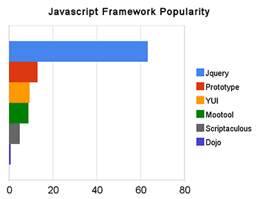

JavaScript
Ideado en 1995 por la compañía Netscape, JavaScript
permitió dotar a las páginas web de un verdadero lenguaje que les
dotará de mayores prestaciones.
Su crecimiento ha sido voraz, de modo que hacia el año 2001 se
hablaba de DHTML hablando de las capacidades
dinámicas que JavaScript y CSS daban a las
páginas web
AJAX

Frameworks de JavaScript más populares
Microsoft fue la creadora de sta tecnología que
permitía que la propia página lanzará peticiones a los servidores
minimizando la carga de contenidos en la página.
Hoy en día la inmensa mayoría de páginas utiliza esta técnica intensivamente
jQuery
Se trata de una plantilla que facilita enormemente el trabajo con JavaScript,
es el framework más utilizado con diferencia y ha permitido facilitar la compatibilidad
y nuevos dinamismos en las páginas.